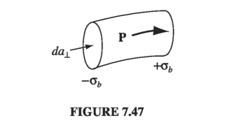
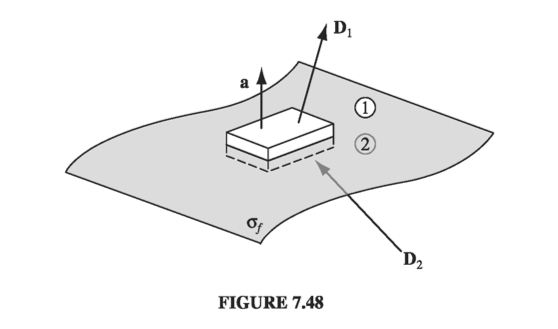

7.3: Maxwell’s Equations#
7.3.1: Electrodynamics Before Maxwell#
So far, we have encountered the following laws, specifying the divergence and curl of electric and magnetic fields
These equations represent the state of electromagnetic theory in the mid-nineteenth century, when Maxwell began his work. They were not written in so compact a form, in those days, but their physical content was familiar. Now, it happens that there is a fatal inconsistency in these formulas. It has to do with the old rule that divergence of curl is always zero. If you apply the divergence to number (iii), everything works out:
The left side is zero because divergence of curl is zero; the right side is zero by virtue of equation (ii). But when you do the same thing to number (iv), you get into trouble:
the left side must be zero, but the right side, in general, is not. For steady currents, the divergence of J is zero, but when we go beyond magnetostatics Ampere’s law cannot be right.

There’s another way to see that Ampere’s law is bound to fail for non-steady currents. Suppose we’re in the process of charging up a capacitor (Fig. 7.43). In integral form, Ampere’s law reads
I want to apply it to the Amperian loop shown in the diagram. How do I deter- mine \( I_{enc} \) ? Well, it’s the total current passing through the loop, or, more precisely, the current piercing a surface that has the loop for its boundary. In this case, the simplest surface lies in the plane of the loop - the wire punctures this surface, so \( I_{enc} = I \) . Fine - but what if I draw instead the balloon-shaped surface in Fig. 7.43? No current passes through this surface, and I conclude that \( I_{enc} = 0 \) ! We never had this problem in magnetostatics because the conflict arises only when charge is piling up somewhere (in this case, on the capacitor plates). But for nonsteady currents (such as this one) “the current enclosed by the loop” is an ill-defined notion; it depends entirely on what surface you use. (If this seems pedantic to you - “obviously one should use the plane surface” - remember that the Amperian loop could be some contorted shape that doesn’t even lie in a plane.)
Of course, we had no right to expect Ampere’s law to hold outside of magnetostatics; after all, we derived it from the Biot-Savart law. However, in Maxwell’s time there was no experimental reason to doubt that Ampere’s law was of wider validity. The flaw was a purely theoretical one, and Maxwell fixed it by purely theoretical arguments.
7.3.2: How Maxwell Fixed Ampere’s Law#
The problem is on the right side of Eq. 7.36, which should be zero, but isn’t. Applying the continuity equation (5.29) and Gauss’s law, the offending term can be rewritten:
If we were to combine \( \epsilon_0 (\partial \vec{E} / \partial t) \) with \( \vec{J} \), in Ampere’s law, it would be just right to kill off the extra divergence:
(Maxwell himself had other reasons for wanting to add this quantity to Ampere’s law. To him, the rescue of the continuity equation was a happy dividend rather than a primary motive. But today we recognize this argument as a far more compelling one than Maxwell’s, which was based on a now-discredited model of the ether.)
Such a modification changes nothing, as far as magnetostatics is concerned: when \( \vec{E} \) is constant, we still have \( \nabla \times \vec{B} = \mu_0 \vec{J} \) . In fact, Maxwell’s term is hard to detect in ordinary electromagnetic experiments, where it must compete for attention with \( \vec{J} \) - that’s why Faraday and the others never discovered it in the laboratory. However, it plays a crucial role in the propagation of electromagnetic waves, as we’ll see in Chapter 9.
Apart from curing the defect in Ampere’s law, Maxwell’s term has a certain aesthetic appeal: Just as a changing magnetic field induces an electric field (Faraday’s law), so
Of course, theoretical convenience and aesthetic consistency are only suggestive - there might, after all, be other ways to doctor up Ampere’s law. The real confirmation of Maxwell’s theory came in 1888 with Hertz’s experiments on electromagnetic waves.
Maxwell called his extra term the displacement current:
(It’s a misleading name; \( \epsilon_0 (\partial \vec{E} / \partial t) \) has nothing to do with current, except that it adds to \( \vec{J} \) in Ampere’s law.) Let’s see now how displacement current resolves the paradox of the charging capacitor (Fig. 7.43). If the capacitor plates are very close together (I didn’t draw them that way, but the calculation is simpler if you assume this), then the electric field between them is
where Q is the charge on the plate and \( A \) is its area. Thus, between the plates
Now, Eq. 7.37 reads, in integral form
If we choose the flat surface, then \( E = 0 \) and \( I_{enc} = I \) . If, on the other hand, we use the balloon-shaped surface, then \( I_{enc} = 0 \) , but \( \int (\partial \vec{E} / \partial t) \cdot \mathrm{d} \vec{a} = I / \epsilon_0 \) . So we get the same answer for either surface, though in the first case it comes from the conduction current, and in the second from the displacement current.
Example 7.14#
Imagine two concentric metal spherical shells (Fig. 7.44). The inner one (radius \( a \) ) carries a charge \( Q(t) \) , and the outer one (radius \( b \) ) an opposite charge \( -Q(t) \) . The space between them is filled with Ohmic material of conductivity \( \sigma \) , so a radial current flows
This configuration is spherically symmetrical, so the magnetic field has to be zero (the only direction it could possibly point is radial, and \( \nabla \cdot \vec B = 0 \rightarrow \oint \vec B \cdot \mathrm{d} \vec a = B(4 \pi r^2) = 0 \), so \( B = 0 \)). What? I thought currents produce magnetic fields! Isn’t that what Biot-Savart and Ampere taught us? How can there be a \( \vec J \) with no accompanying \( \vec B \)?
This is not a static configuration! \( Q, \vec E, \vec J \) are all functions of time; Ampere and Biot-Savart do not apply. The displacement current
exactly cancels the conduction current (in Eq. 7.37), and the magnetic field (determined by \( \nabla \cdot \vec{B} = 0 \) and \( \nabla \times \vec{B} = 0 \) is indeed zero.
7.3.3 Maxwell’s Equations#
In the last section we put the finishing touches on Maxwell’s equations:
Tip
Maxwell’s Equations
Together, with the force law,
they summarize the entire theoretical content of classical electrodynamics (save for some special properties of matter, which we encountered in Chapters 4 and 6). Even the continuity equation,
which is the mathematical expression of conservation of charge, can be derived from Maxwell’s equations by applying the divergence to number (iv).
I have written Maxwell’s equations in the traditional way, which emphasizes that they specify the divergence and curl of \( \vec{E} \) and \( \vec{B} \) . In this form, they reinforce the notion that electric fields can be produced either by charges (\( \rho \) ) or by changing magnetic fields (\( \partial \vec{B} / \partial t \) ), and magnetic fields can be produced either by currents (\( \vec{J} \) ) or by changing electric fields (\( \partial \vec{E} / \partial t \) ). Actually, this is misleading, because \( \partial \vec{B} / \partial t \) and \( \partial \vec{E} / \partial t \) are themselves due to charges and currents. I think it is logically preferable to write
with the fields (\( \vec{E} \) and \( \vec{B} \) ) on the left and the sources (\( \rho \) and \( \vec{J} \) ) on the right. This notation emphasizes that all electromagnetic fields are ultimately attributable to charges and currents. Maxwell’s equations tell you how charges produce fields; reciprocally, the force law tells you how fields affect charges.
7.3.4: Magnetic Charge#
There is a pleasing symmetry to Maxwell’s equations; it is particularly striking in free space, where \( \rho \) and \( \vec J \) vanish
If you replace \( \vec E \) by \( \vec B \) and \( \vec B \) by \( - \mu_0 \epsilon_0 \vec E \), the first pair of equations turns into the second, and vice versa. This symmetry between \( \vec E \) and \( \vec B \) is spoiled, though, by the charge term in Gauss’s law and the current term in Ampere’s law. You can’t help wondering why the corresponding quantities are “missing” from \( \nabla \cdot \vec B = 0 \) and \( \nabla \times \vec E = - \partial \vec B / \partial t \) . What if we had
Then \( \rho_m \) would represent the density of magnetic “charge”, and \( \rho_e \) the density of electric charge; \( \vec J_m \) would be the current of magnetic charge, and \( \vec J_e \) the current of electric charge. Both charges would be conserved:
The former follows by application of the divergence to (iii), the latter by taking the divergence of (iv).
In a sense, Maxwell’s equations beg for magnetic charge to exist - it would fit in so nicely. And yet, in spite of a diligent search, no one has ever found any. As far as we know, \( \rho_m \) is zero everywhere, and so is \( \vec J_m \) ; \( \vec B \) is not on equal footing with \( \vec E \) : there exist stationary sources for \( \vec E \) (electric charges) but none for \( \vec B \) . (This is reflected in the fact that magnetic multipole expansions have no monopole term, and magnetic dipoles consist of current loops, not separated north and south “poles.”) In quantum electrodynamics, by the way, it’s a more than merely aesthetic shame that magnetic charge does not seem to exist: Dirac showed that the existence of magnetic charge would explain why electric charge is quantized.
7.3.5: Maxwell’s Equations in Matter#
Maxwell’s equations in the form 7.40 are complete and correct as they stand. However, when you are working with materials that are subject to electric and magnetic polarization there is a more convenient way to write them. For inside polarized matter there will be accumulations of “bound” charge and current, over which you exert no direct control. It would be nice to reformulate Maxwell’s equations so as to make explicit reference only to the “free” charges and currents.
We have already learned, from the static case, that an electric polarization \( \vec{P} \) produces a bound charge density
(Eq. 4.12). Likewise, a magnetic polarization (or “magnetization”) \( \vec{M} \) results in a bound current
(Eq. 6.13). There’s just one new feature to consider in the nonstatic case: Any change in the electric polarization involves a flow of (bound) charge (call it \( \vec{J}_p \) ), which must be included in the total current. For suppose we examine a tiny chunk of polarized material (Fig. 7.47). The polarization introduces a charge density \( \sigma_b = P \) at one end and \( - \sigma_b \) at the other (Eq. 4.11). If \( P \) now increases a bit, the charge on each end increases accordingly, giving a net current
The current density, therefore, is
This polarization current has nothing to do with the bound current \( \vec{J}_b \) . The latter is associated with magnetization of the material and involves the spin and orbital motion of electrons; \( \vec{J}_p \) by contrast, is the result of the linear motion of charge when the electric polarization changes. If \( P \) points to the right, and is increasing, then each plus charge moves a bit to the right and each minus charge to the left; the cumulative effect is the polarization current \( \vec{J}_p \) . We ought to check that Eq. 7.49 is consistent with the continuity equation:

Yes: the continuity equation is satisfied: in fact \( \vec{J}_p \) is essential to ensure the conservation of bound charge. (Incidentally, a changing magnetization does not lead to any analogous accumulation of charge or current. The bound current \( \vec{J}_b = \nabla \times \vec{M} \) varies in response to \( \vec{M} \) , to be sure, but that’s about it.)
In view of all this, the total charge density can be separated into two parts:
and the current density into three parts
Gauss’s law can now be written as
or
where, as in the static case
Meanwhile, Ampere’s law (with Maxwell’s term) becomes
or
where, as before
Faraday’s law and \( \nabla \cdot \vec{B} = 0 \) are not affected by our separation of charge and current into free and bound parts, since they do not involve \( \rho \) or \( \vec{J} \) .
In terms of free charges and currents, then, Maxwell’s equations read
Tip
Maxwell’s Equations in Matter
Some people regard these as the “true” Maxwell’s equations, but please understand that they are in no way more “general” than Eq. 7.40; they simply reflect a convenient division of charge and current into free and nonfree parts. And they have the disadvantage of hybrid notation, since they contain both \( \vec{E} \) and \( \vec{D} \) , both \( \vec{B} \) and \( \vec{H} \) . They must be supplemented, therefore, by appropriate constitutive relations, giving \( \vec{D} \) and \( \vec{H} \) in terms of \( \vec{E} \) and \( \vec{B} \) . These depend on the nature of the material; for linear media
so
where \( \epsilon = \epsilon_0 (1 + \chi_e) \) and \( \mu = \mu_0 (1 + \chi_m) \). Incidentally, you’ll remember that \( \vec{D} \) is called the electric “displacement”; that’s why the second term in the Ampere/Maxwell equation came to be called the displacement current. In this context
7.3.6: Boundary Conditions#
In general, the fields \( \vec{E}, \vec{B}, \vec{D}, \) and \( \vec{H} \) will be discontinuous at a boundary between two different media, or at a surface that carries a surface charge density \( \sigma \) or a current density \( \vec{K} \). The explicity form of these discontinuities can be deduced from Maxwell’s equations in their integral form

Applying (1) to a tiny, wafer-thin Gaussian pillbox extending just slightly into the material on either side of the boundary (Fig 7.48), we obtain
(The positive direction for \( \vec a \) is from 2 toward 1. The edge of the wafer contributes nothing in the limit as the thickness goes to zero; nor does any volume charge density.) Thus, the component of \( \vec D \) that is perpendicular to the interface is discontinuous in the amount
Identical reasoning, applied to equation (2) yields
Turning to (3), a very thin Amperian loop straddling the surface gives
But in the limit as the width of the loop goes to zero, the flux vanishes. (I have already dropped the contribution of the two ends to \( \oint \vec{E} \cdot \mathrm{d} \vec l \), on the same grounds)
Therefore,
That is, the components of \( \vec E \) parallel to the interface are continuous across the boundary. By the same token, (4) implies
where \( I_{f, enc} \) is the free current passing through the Amperian loop. No volume current density will contribute (in the limit of infinitesimal width), but a surface current can. In fact, if \( \hat{n} \) is a unit vector perpendicular to the interface (pointing from 2 toward 1), so that \( (\hat{n} \times \vec l ) \) is normal to the Amperian loop (Fig 7.49), the
 and hence
and hence
So the parallel components of \( \vec H \) are discontinuous by an amount proportional to the free surface current density.
Equations 7.60-63 are the general boundary conditions for electrodynamics. In the case of linear media, they can be expressed in terms of \( \vec E \) and \( \vec B \) alone
In particular, if there is no free charge or free current at the interface, then
These equations provide the basis for the theory of reflection and refraction.